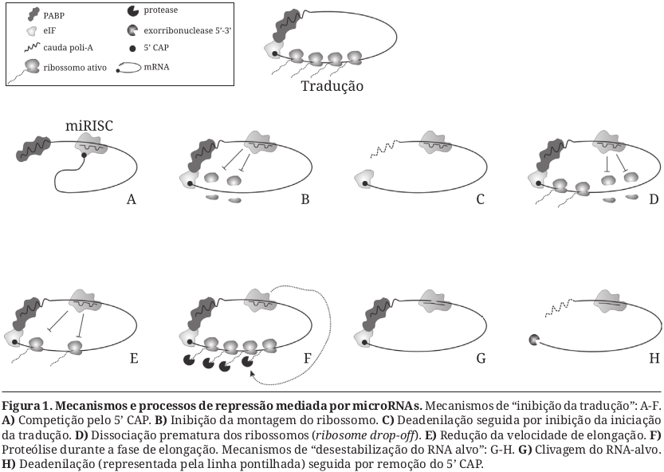
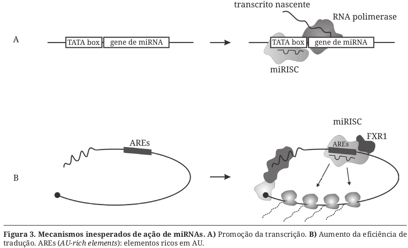

7 Mecanismos de ação dos miRNAs
7.1 Descreva os 5 mecanismos gerais conhecidos de ação dos miRNAs
7.1.1 Inibição da tradução

Competição pelo cap 5’: Possivelmente, a AGO impede o reconhecimento do cap 5’ pela Cap-binding protein, etapa necessária para o início da tradução.
Inibição da montagem dos ribossomos: AGO2 se associa a um fator de iniciação da tradução, eIF6 - esta que impede a formação da organela, e à subunidade maior do ribossomo, impossibilitando a formação do ribossomo.
Deadenilação e bloqueio do início: É um dos mecanismos de ação propostos para o let-7, em que este miRNA promove a remoção da cauda poli-A, ou deadenilação, evento este que impede a circularização do mRNA, algo indispensável para o início da tradução.
Dissociação prematura de ribossomos: Desestabilização dos polissomos.
Redução da velocidade de elongação
Proteólise durante a elongação: miRNAs promovem a degradação da cadeia polipeptídica enquanto ela é formada. É algo bastante questionado por não se basear em algo diretamente observado.
7.1.2 Desestabilização do RNA-alvo
Clivagem: Direcionamento do miRISC ou siRISC ao RNA-alvo, resultando na atividade endonucleotídica, ou slicing, da AGO2, que são posteriormente degradados pelo decaimento natural de RNA da célula.
Deadenilação e remoção do cap 5’: Recrutamento de complexos proteicos propiciado pela AGO que vulneraliza o mRNA para as ações de exonucleases.
7.1.3 Sileciamento da transcrição
Metilação do DNA: Algo observado principalmente em plantas, geralmente envolve metilação de resíduos de citosina, tanto em cis, onde são produzidos, quanto em trans, nos seus alvos.
Modificações de cromatina: Quando o pareamento do miRNA é imperfeito, geralmente há uma modificação H3k9me2 ao redor do sítio promotor. Quando a complementaridade é mais acurada, a modificação que ocorre é H3k27me3, possivelmente auxiliado pela metiltransferase EZH2.

7.1.4 Promoção da transcrição
Algo que foi observado com o miRNA let-7i.
7.1.5 Aumento da eficiência de tradução
Geralmente ocorre por meio de uma interação dos miRNAs com regiões UTR, a exemplo do miR396-3, que promove a formação de microRNPs, estas que irão, por fim, interagir com regiões ricas em AU na 3’ UTR do mRNA de TNFα.
7.2 O que são corpos-P, onde se localizam e o que possuem?
São os corpúsculos de processamento de RNA, onde mRNAS-alvo de miRNAs são direcionados para sofrerem o sileciamento ou desestabilização. Se localizam no citoplasma e possuem, além, é claro, dos mRNAs-alvo, proteínas associadas ao processo de silenciamento e proteínas relacionadas a desestabilização do mRNA, como aquelas responsáveis pela remoção do cap 5’.